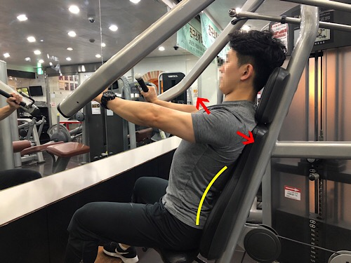

체스트 프레스
시작 자세
1.복부를 살짝 조여준 다음 팔을 굽혀 손잡이를 잡는다
2.등을 패드에 붙이고 가슴을 최대한 펴준다
3.정수리를 최대한 위로 잡아당긴다는 느낌으로 허리와 골반의 중립을 유지한다.

1.호흡을 들이쉬면서, 가슴을 최대한 펴준다.
2.숨을 들이쉬면서, 가슴이 늘어나는 것을 느끼며 시작자세로 돌아온다
3.호흡을 뱉으면서 가슴을 펴준 채로, 강하게 밀어준다
--------------------------------------------------------------
추천영상 링크
김준호(체스트프레스 2:25초)